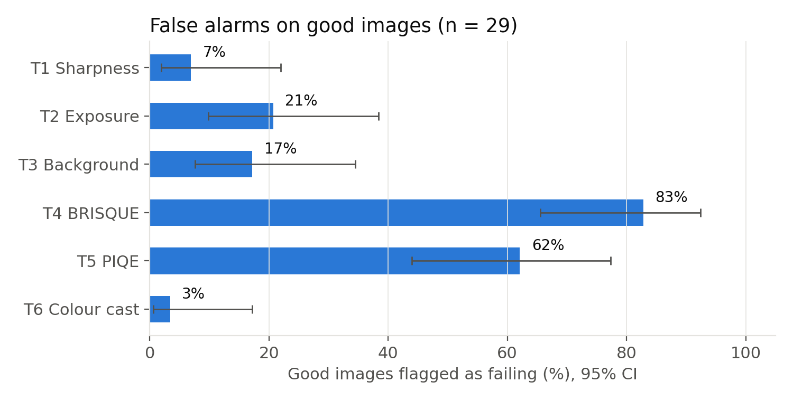
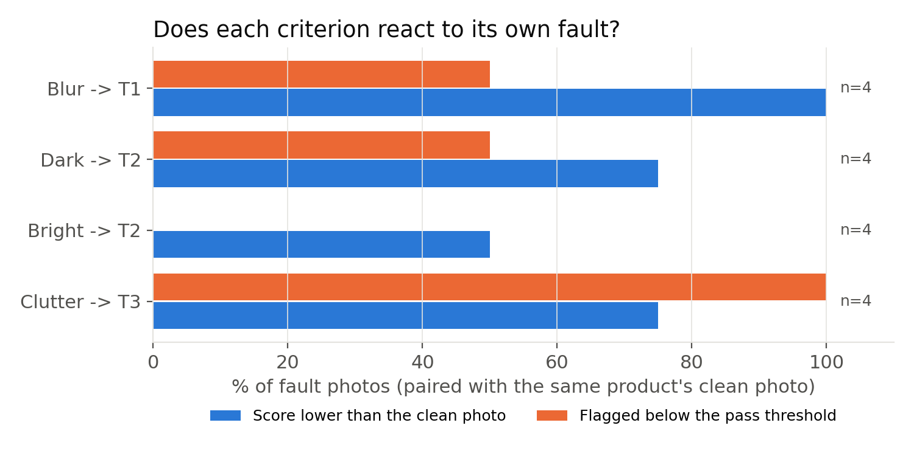
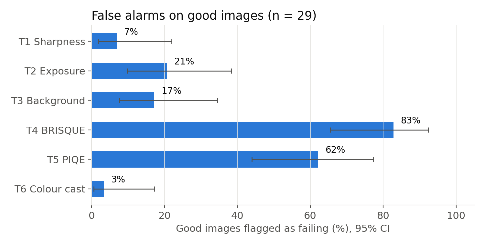
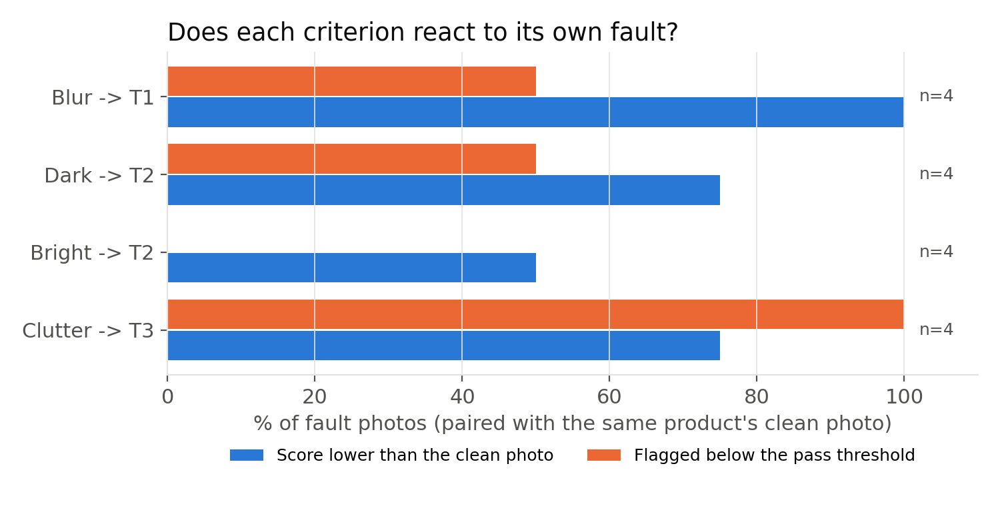
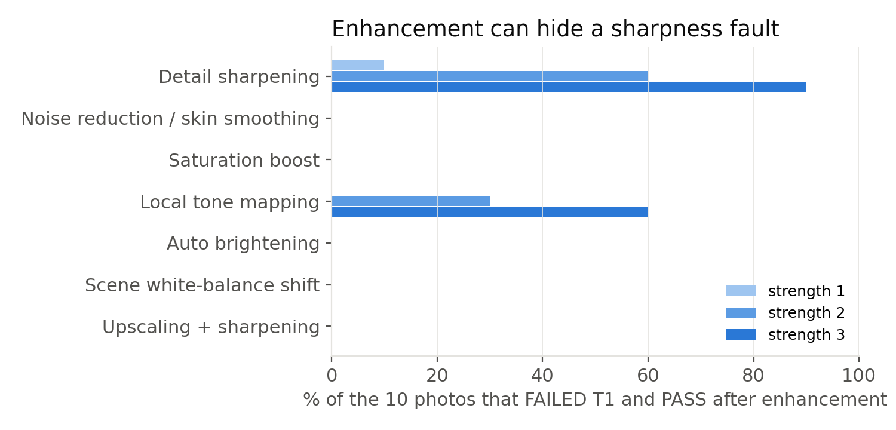
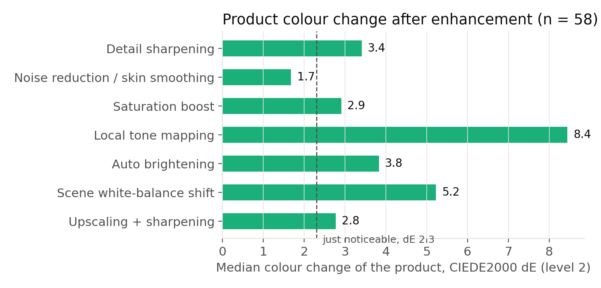

Generated 2026-10-08 by research/evaluation/build_report.py. Every figure is computed from the files named under it.
Source: research\results\o1_calibration\summary.json. Images 52 (29 good, 23 with one known fault). Spec v1.3 thresholds. Brackets: 95% Wilson CI.
| Criterion | Threshold | Detects its fault | False alarms on good | AUC |
|---|---|---|---|---|
| T1 Sharpness | 0.2 | 2/4 (50%; 15-85) | 2/29 (7%; 2-22) | 0.888 |
| T2 Exposure | 0.6 | 2/8 (25%; 7-59) | 6/29 (21%; 10-38) | 0.491 |
| T3 Background | 0.55 | 4/4 (100%; 51-100) | 5/29 (17%; 8-35) | 0.974 |
| T4 BRISQUE | 0.6 | no constructed fault | 24/29 (83%; 65-92) | - |
| T5 PIQE | 0.55 | no constructed fault | 18/29 (62%; 44-77) | - |
| T6 Colour cast | 0.6 | no constructed fault | 1/29 (3%; 1-17) | - |

| Fault | Criterion | Pairs | Lower than clean | Below threshold | Median change | Sign test p (descriptive) |
|---|---|---|---|---|---|---|
| BLUR | T1 Sharpness | 4 | 4 | 2 | -0.203 | 0.0625 |
| DARK | T2 Exposure | 4 | 3 | 2 | -0.189 | 0.125 |
| BRIGHT | T2 Exposure | 4 | 2 | 0 | 0.009 | 0.6875 |
| CLUTTER | T3 Background | 4 | 3 | 4 | -0.046 | 0.125 |

| Rejected | Passed | |
|---|---|---|
| Degraded | 1 | 0 |
| Good | 0 | 0 |
Sensitivity 1.0, specificity nan, balanced accuracy nan, MCC nan.
Source: research\results\o1_calibration_technical\summary.json. Images 52 (29 good, 23 with one known fault). Spec v1.3 thresholds. Brackets: 95% Wilson CI.
| Criterion | Threshold | Detects its fault | False alarms on good | AUC |
|---|---|---|---|---|
| T1 Sharpness | 0.2 | 2/4 (50%; 15-85) | 2/29 (7%; 2-22) | 0.888 |
| T2 Exposure | 0.6 | 2/8 (25%; 7-59) | 6/29 (21%; 10-38) | 0.491 |
| T3 Background | 0.55 | 4/4 (100%; 51-100) | 5/29 (17%; 8-35) | 0.974 |
| T4 BRISQUE | 0.6 | no constructed fault | 24/29 (83%; 65-92) | - |
| T5 PIQE | 0.55 | no constructed fault | 18/29 (62%; 44-77) | - |
| T6 Colour cast | 0.6 | no constructed fault | 1/29 (3%; 1-17) | - |

| Fault | Criterion | Pairs | Lower than clean | Below threshold | Median change | Sign test p (descriptive) |
|---|---|---|---|---|---|---|
| BLUR | T1 Sharpness | 4 | 4 | 2 | -0.203 | 0.0625 |
| DARK | T2 Exposure | 4 | 3 | 2 | -0.189 | 0.125 |
| BRIGHT | T2 Exposure | 4 | 2 | 0 | 0.009 | 0.6875 |
| CLUTTER | T3 Background | 4 | 3 | 4 | -0.046 | 0.125 |

Source: research\results\ai_enhancement\summary.json. Simulated operators, not vendor algorithms.
| Operator | Level | Group | n | T1 fail->pass | T1 change | T6 change | Product dE (median) |
|---|---|---|---|---|---|---|---|
| Detail sharpening (unsharp mask) | 1 | all | 58 | 1 of 10 | +0.108 | +0.004 | 1.85 |
| Detail sharpening (unsharp mask) | 1 | blurred | 4 | 0 of 2 | +0.104 | -0.002 | 0.65 |
| Detail sharpening (unsharp mask) | 3 | all | 58 | 9 of 10 | +0.208 | -0.004 | 5.95 |
| Detail sharpening (unsharp mask) | 3 | blurred | 4 | 1 of 2 | +0.300 | -0.115 | 2.14 |
| Noise reduction / skin smoothing (bilateral) | 1 | all | 58 | 0 of 10 | +0.004 | +0.001 | 1.07 |
| Noise reduction / skin smoothing (bilateral) | 1 | blurred | 4 | 0 of 2 | -0.014 | +0.003 | 0.68 |
| Noise reduction / skin smoothing (bilateral) | 3 | all | 58 | 0 of 10 | -0.031 | +0.000 | 2.26 |
| Noise reduction / skin smoothing (bilateral) | 3 | blurred | 4 | 0 of 2 | -0.109 | +0.004 | 1.03 |
| Saturation boost ('vivid' / scene optimiser) | 1 | all | 58 | 0 of 10 | -0.003 | -0.007 | 1.57 |
| Saturation boost ('vivid' / scene optimiser) | 1 | blurred | 4 | 0 of 2 | -0.007 | -0.020 | 1.22 |
| Saturation boost ('vivid' / scene optimiser) | 3 | all | 58 | 0 of 10 | -0.009 | -0.098 | 4.58 |
| Saturation boost ('vivid' / scene optimiser) | 3 | blurred | 4 | 0 of 2 | -0.019 | -0.031 | 3.57 |
| Local tone mapping (HDR-like, CLAHE) | 1 | all | 58 | 0 of 10 | +0.076 | +0.017 | 6.45 |
| Local tone mapping (HDR-like, CLAHE) | 1 | blurred | 4 | 0 of 2 | +0.091 | +0.010 | 4.21 |
| Local tone mapping (HDR-like, CLAHE) | 3 | all | 58 | 6 of 10 | +0.123 | +0.018 | 10.96 |
| Local tone mapping (HDR-like, CLAHE) | 3 | blurred | 4 | 1 of 2 | +0.240 | +0.008 | 8.35 |
| Auto brightening (gamma) | 1 | all | 58 | 0 of 10 | -0.014 | -0.027 | 1.77 |
| Auto brightening (gamma) | 1 | blurred | 4 | 0 of 2 | -0.008 | -0.111 | 1.95 |
| Auto brightening (gamma) | 3 | all | 58 | 0 of 10 | -0.066 | +0.005 | 7.25 |
| Auto brightening (gamma) | 3 | blurred | 4 | 0 of 2 | -0.007 | -0.166 | 7.73 |
| Scene white-balance shift (warmer) | 1 | all | 58 | 0 of 10 | -0.001 | -0.309 | 2.71 |
| Scene white-balance shift (warmer) | 1 | blurred | 4 | 0 of 2 | -0.001 | -0.209 | 3.44 |
| Scene white-balance shift (warmer) | 3 | all | 58 | 0 of 10 | -0.005 | -0.500 | 8.21 |
| Scene white-balance shift (warmer) | 3 | blurred | 4 | 0 of 2 | -0.006 | +0.073 | 10.01 |
| Upscaling + sharpening (super-resolution-like) | 1 | all | 58 | 0 of 10 | +0.041 | +0.001 | 2.68 |
| Upscaling + sharpening (super-resolution-like) | 1 | blurred | 4 | 0 of 2 | -0.083 | -0.002 | 1.08 |
| Upscaling + sharpening (super-resolution-like) | 3 | all | 58 | 0 of 10 | -0.464 | +0.001 | 2.96 |
| Upscaling + sharpening (super-resolution-like) | 3 | blurred | 4 | 0 of 2 | -0.274 | +0.001 | 1.19 |


Source: research\results\system\summary.json. Network time excluded.
| Measure | Result | n |
|---|---|---|
| Live guidance, server time per frame (224 px) | median 11.4 ms, p90 17.9 ms | 30 |
| Technical scoring per photo | median 1044.4 ms, p90 1344.9 ms | 50 |
| Same photo scored twice | 2 identical; max difference 3.091971123581061e-13 | 50 |
| View signature after JPEG re-encoding | max distance 0.129; false 'different view' 0 | 50 |
| Video render | 40.9 s for a 8.1 s video | 1 |
| Automated tests | 166 passed, 82 warnings in 206.88s (0:03:26) | 166 |